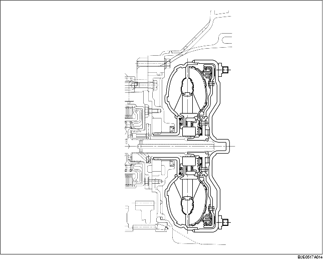

• Momentomvandlarens koppling kopplar mekaniskt ihop pumpens impeller och turbinblad under vissa förhållanden, och överför kraften, inte via oljan, utan direkt, vilket gör att ingen varvtalsskillnad eller slirning sker mellan ingående och utgående del i momentomvandlaren.
• Varje motor har sin egen utvecklade momentomvandlare som är anpassad till motorns effekt och bilens behov av momentomvandling.
